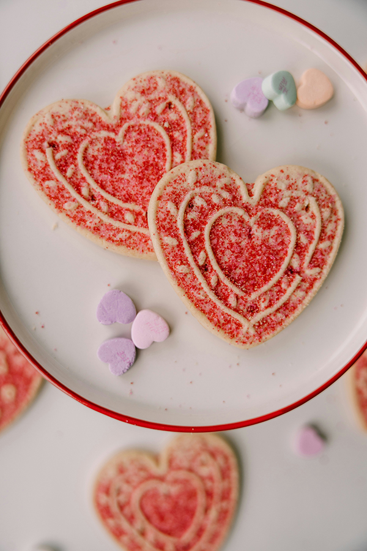

Soft Glazed Valentine Heart Cookies
These Soft Glazed Valentine Heart Cookies are the perfect balance of a buttery, melt-in your mouth shortbread and a sweet, vanilla bean icing. They are designed to hold their shape perfectly during baking.
Ingredients:
For the Sugar Cookie Base:
- 1 cup (225g) Unsalted butter, softened
- 1 cup (200g) Granulated sugar
- 1 large Egg, room temperature
- 1 ½ tsp Pure vanilla extract
- ½ tsp Almond extract
- 3 cups (375g) All purpose flour
- ¾ tsp Baking powder
- ¼ tsp Salt
For the Easy Glossy Glaze:
- 2 cups Powdered sugar, sifted
- 2-3 tbsp Whole milk
- 1 tbsp Light corn syrup (gives it that professional shine!)
- Gel food coloring (Pink or Red)
- Festive sprinkles
Instructions:
- Cream the Butter and Sugar. In a large bowl or stand mixer, cream together the softened butter and granulated sugar until pale and fluffy (about 2–3 minutes). Add the egg, vanilla, and almond extract, beating until well combined.
- Mix Dry Ingredients. In a separate bowl, whisk together the flour, baking powder, and salt. Gradually add the dry ingredients to the wet mixture on low speed. The dough should be thick and not sticky. If it's too soft, add 1 more tablespoon of flour.
- Chill the Dough.Divide the dough into two discs and wrap them in plastic wrap. Chill in the fridge for at least 1 hour. This is the secret to ensuring the hearts keep their sharp edges!
- Roll and Cut. Preheat your oven to 350°F (175°C). On a lightly floured surface, roll the dough to about ¼ inch thickness. Use your heart-shaped cutters to stamp out shapes and place them on a parchment-lined baking sheet.
- Bake for 8 to 10 minutes. You want them to look “set” but not browned. Let them cool on the baking sheet for 5 minutes before transferring them to a wire rack to cool completely.
- Decorate. Whisk the glaze ingredients together until smooth. It should be thick but pourable. Divide into bowls to add your food coloring. Dip the tops of the cooled cookies into the glaze or use a spoon to spread it to the edges. Add sprinkles immediately before the glaze sets!
Pro Tips:
- The “No Spread” Trick: After you cut out your heart shapes and put them on the baking sheet, pop the whole tray in the freezer for 5 minutes before sliding it into the oven.
- The Glaze Consistency: If your glaze is too runny, add more powdered sugar. If it’s too thick to spread, add milk one teaspoon at a time.
- Storage: These cookies stay soft for up to 5 days in an airtight container.